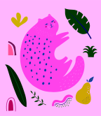
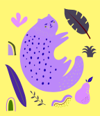
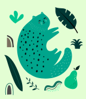

Image Generation
A variety of tools were tested for accuracy and visuals of creating mockups.
Of the tools tested there were various issues with content organization and text readability. Occasionally, the content created is not aligned and does not follow the organization of the reference image. The text generated was often scrambled with various fake words spread across the designs. On the other hand ,the color scheme was maintained in each prompt generation.
Currently, it is not recommended to use AI tools to generate complex web pages. Tools can be used to generate pages with minimal content blocks or to brainstorm design layouts.
Tools Tested
Ando
This Figma plugin generates design ideas from sketches, images and prompt descriptions. It uses an existing frame within Figma as reference and can output images in various sizes and numbers.
The plugin worked well generating similar images from its reference as well as translating vector art into a realistic image. The plugin struggled generating a similar website mockup, only maintaining a similar color scheme. Content was off-centre and text was scrambled and not readable. In addition the image generated was poorly done with elements blending into each other.
Details
Ando UI
Example 1: Pizza Generation From a Reference Image
The screenshot above shows the original Mushroom pizza image on the left and generated image variations on the right with the prompt of: ''Large classic mushroom pizza with pepperoni". The second generated image is closer to the original image by adding in the prompt word ''circular" to the previous prompt.
Example 2: Website Homepage Generation From a Reference Image

Prompt: ''A vibrant red landing website page with a bowl of noodles as the main image"
The text included scrambled, fake words. The content issues included misaligned content, and an ugly additional red border. The image generation issues included objects such as chopsticks blending poorly with the noodle soup. The color scheme was maintained.
Adobe Firefly
Adobe Firefly is a set of generative AI tools that allow you to create and modify images, generate decorative text and recolor vector images. It accurate in creating stylized images and adding visual elements to existing images. It struggles with generating realistic designs, lacks detailed customization options of generated images, and is only usable with public domain and Adobe Stock content. Currently, this limits its usage and accuracy for image generation.
Details
Advantages
- Prompts in general give accurate results
- It is easy to edit generated images by clicking preset options or modifying prompts.
- It can be used commercially in the future as it respects ip rights.
- The similar results button works well to generate variations of images.
- The interface is intuitive. You can alter the prompt or choose from preset options to change the look of the generated image.
Disadvantages
- There are limited Customization options for fine tuning designs once the prompt is inputted. You can only recolor, or replace parts of the generated image.
- There are inconsistencies with image quality at edges of objects.
- Custom fonts can not be used.
- Video Content is not currently supported.
- Can not currently be used with your own artwork/photos and only with commercially available content like Adobe Stock, public domain, openly licensed footage.
- Struggles with realistic images and human proportions with design elements blending into each other.
Feature Tests
Generative Fill
With generative fill it was easy to add additional design elements to images. Typically you want to add elements within a small area for minimal visual interference. Isolating elements from an image such as removing the background or subjects from an image works well if there are clear foreground and background elements.
Text to Image
This tool struggled with depicting humans in realistic environments due to a lack of reference content. It was better at depicting background scenery, cartoony imagery using the "art" or graphic" presets. Unfortunately, you can't adjust individual elements in the picture but you can change color, tone, lighting, composition presets.
Generative Recolor
This tool is good at generating variations of vector images that are less realistic with clearly separated elements. All paths of the entire vector image must be closed to generate variations.
You can not adjust individual elements, only being able to choose from preset main color schemes and prompt variations.
Text Effects
The text effects tool worked the best out of the tools tested. You can apply generative art over text by choosing from options such as preset styles, adherence level to shape, font types, and background or text color.
With this tool the tight match shape option worked the best with generated designs. Simpler prompts work the best with a maximum of two prompt factors used such as the color and type of texture.
Adobe Firefly Generation Examples
Responses:
Example 3: Fish Generated Image Generative Fill
-
Original Image
-
Removed fish from background

-
Removed the background in fish image

-
Additional fish added using the prompt "add fish in the water"

Example 4: Forest With Yellow Wheat Text to Image Examples
-
Prompt: Forest surrounded by yellow wheat
-
Photo version

-
Graphic Version
-
Art Version

Example 5: Surfer on Mars Text to Image
-
Art Version

-
Photo Version (Misaligned Limbs, Limbs blend into surfboard)

Example 6: Cat Vector Generative Recolor
-
Prompts used: trippy disco lights, faded emerald city
-
Disco Cat 1
 -
Disco Cat 2
 -
Emerald City Cat

Example 7: Text Effects
-
Android wires preset text

-
Android baloon preset text

-
Android flowers preset text